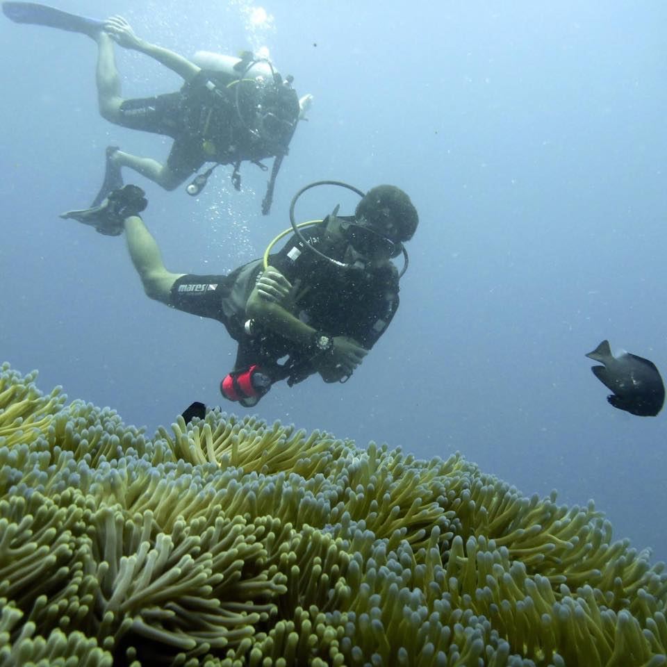

SAY NO TO PLASTIC STRAWS
Find alternatives here >HUMANS
-
Matt Megill
Graduated from UVA in 2014 with a BA in Cognitive Science and Biology. Loves scuba diving. Passionate about science and protection of the ocean. Hence the website. catch a video of him playing the piano right here
Read more > -
Grace Calvert Young

Lived under the ocean for two months in the research station called the Aquarius. Engineered very high frame rate cameras that are able to catch extremely fast animal behaviors in very slow motion while underwater. She also loves ballet.
Read more > -
Eric Masiello
The Javascript master. Don't even try to jump him at the metro station, or else he will pull some ninja moves on you. Loves house music. Let us know when you teach a Javascript course and I'll for sure take it.
Read more >
Coral Aid Bob

Engineer of "Coral Aid" artificial reef structures. These are slightly electrically charged structures that recruit minerals to help corals grow faster. His favorite drink is a Caipiroska.
Read more >Erika Lewis
She'll school you at CSS and Wordpress. Also at DJing. The instructor with the most swag in the room. You will be missed. You'll definitely be seeing me at one of your parties.
Read more >